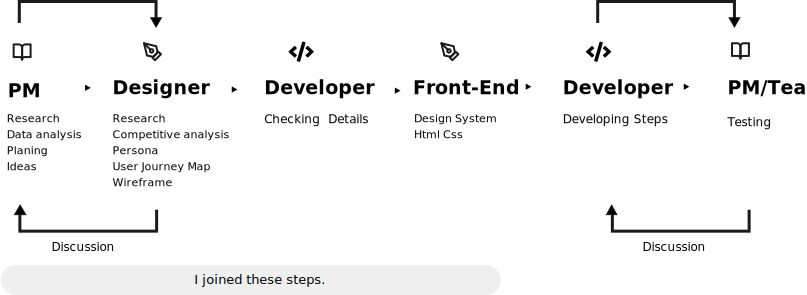
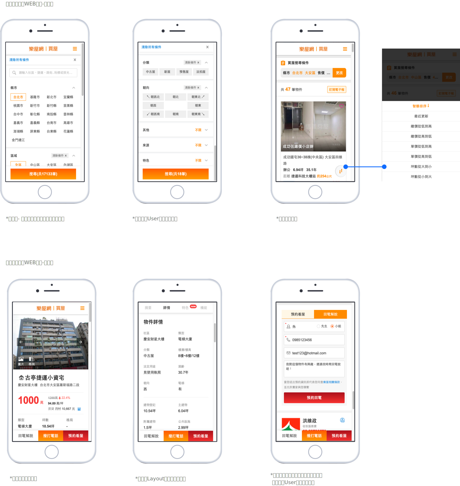

Rakuya pages
Role
- UI UX Designer
- Front-end Developer
Deliverbles
- Research
- Persona
- User Journey Map
- Wireframes
- Developer
Collaborators
- Project Manager
- UI UX Designer
- Back-end Developer
Overviews
樂屋網為台灣PChome Online網路家庭與台灣五間不動產經紀公司共同合資成立之網路服務公司，主要提供不動產物件的網路刊登服務。我們致力於讓Users與我們仲介及租售者能擁有良好的溝通平台。我們優化了賣屋搜尋頁並『預約看屋』及『回電解說功能』介面流程，並新增『互動訊息』能夠及時與平台互動訊息，不再需要透過額外的社交平台。
Rakuya is a network service company jointly established by PChome Online(Taiwan B2B) .it mainly provides property for renting/selling online platform. We are committed to letting users have a good experience platform for our agents and renters. Optimise the house search page and the interface process of user experiences functions, including ”viewing a house with booking a date”, “easily contact your agency” also added "interactive message” to interact with the platform in time, without the need to go through additional social platforms.
The Prombles
由於網頁給予的數據和User使用的反饋，我們在租賃平台和銷售平台上的成交率偏低，為解決此問題，我們優化了幾個部分。
Due to data review and feedback after users, our performance on the rental platform/sold platform of profit is rather on the low side, In order to solve this problem, we have optimized several parts.
My Role
為了解決方案，我提供了用戶相對應的角色並與PM一起溝通討論。通過這些角色，我製作了“User Journey Map”，該地圖了解到他們在過程中哪些是對他們體驗感最佳至體驗感最差，同時也參與競品分析。最後由於這些因素，我列出了一些基本要素並進行了優先排序和組織，最終與另名設計師一同規劃wireframe。在後期我也負責建立UI設計介面及前端開發製作。
To implement this solution,I started by establishing personas that correspond to the key users of this solution and disccsion with PM. With these personas I have established User Journey Map that will understand what parts is good or bad experiences for users, also we're studyed competitive analysis. Finally thanks to this, I made a list of essential features that I prioritized and organized to finally establish the first wireframes that draw the first features of the layout with another designer. Finally, once the wireframes were well elaborated I was able to build the final interfaces and front-end pages.
Problem Statement
這次我們做了競品分析，針對頁面路徑做了點擊次數的統計，發現我們比其他較多了四個步驟才讓user填完資料。 所以，目標上需要減少user過程中的點擊次數，並優化users與代理商互動的交流
We did research for competitive products. We found that we had four more steps than others to complete all Journey. Reduce the number of clicks in the process, to speed up users get to the property and improve interaction with agents.
Our Goles
改善搜尋與條件設計 Optimise search page and conditions
房屋物件頁介面調整 Adjustment of property page(Rent/Selling) and Design
User在找到喜歡自己的物件後，便於與代理商聯絡 Give Users contact easily with agency
Process Overviews
The Design

我們團隊引入敏捷式開發，過程中減少了溝通上的誤會，也更多了解彼此在不同部門的立場與決策。而在這次，我們成功地解決User從搜尋頁至物件頁的流程，客戶及代理商事後給予我們的回饋非常良好，並解決這些痛點後，我們 往後的客戶的增長許多，並且帶動我們公司營業額有兩倍以上的成長，帶入利潤進來。